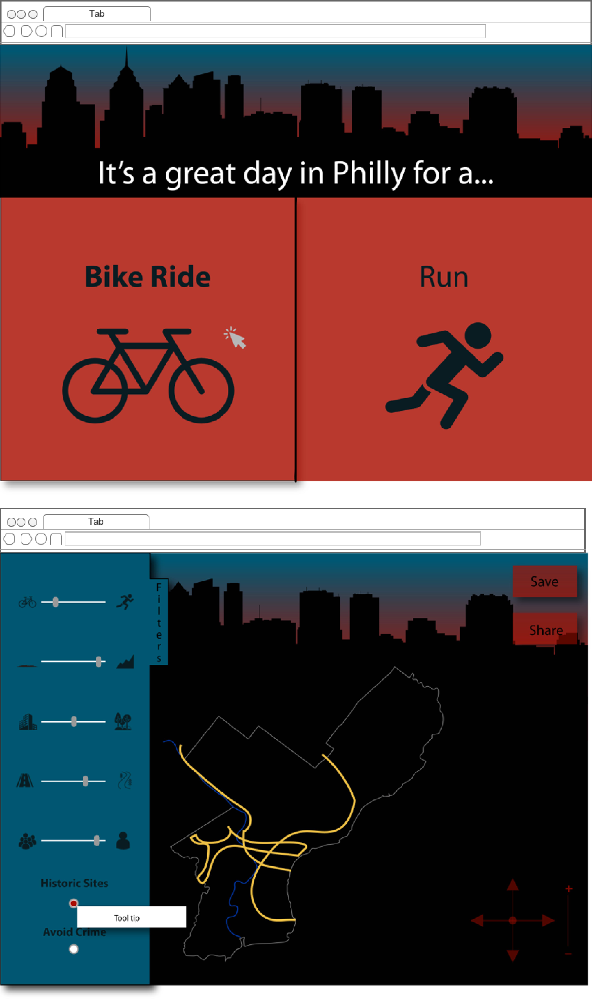
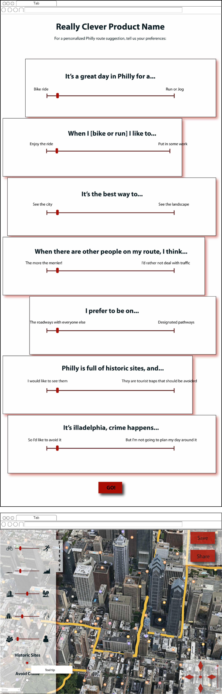

Visualizing Data Project
Data Analysis and DesignThis was an assignment for my Digital Experience Design class. The objective was to become aquainted with the open source datasets, found on OpenDataPhilly, and design a vizual way to interpret the data that interested us. There was a learning curve, as I am not a data analyst, and the biggest challenge proved to be designing a way to interact with the tables of numbers and symbols I found. Please note that the designs were to be 'inspired by the data' rather than accurately depicting the information.
Primary Data: Finding the right information
I encourage every Philadelphia resident to explore the Open Data Philly website; it has a lot of surprising, and useful, information about things going on in Philadelphia, socially and developmentally. I began the initial part of this project believing I would choose a dataset that has to do with nightlife in the city. My focus quickly shifted as I came accross data relating to bigger issues in our community; there was information about poverty, education, and recreation, amongst other topics. Bicycling is a popular hobby in the area, and it took me several years to get aquainted with many of the trails and popular biking roadways. This lead me to be attracted to the Bike Network dataset. The abstract that was included with the data gave the following key for interpreting the data:
FIELD NAMES AND DESCRIPTIONS: SEG_ID - Unique segment identifier STREETNAME - complete street name including directional prefix; street name; street type; directional suffix ST_CODE - street code, the unique street name identifier ONEWAY - travel direction of street segment, relative to the digitized direction of segment CLASS - Street classification related to traffic volume and drivability
-
DOMAIN VALUES FOR FIELD CLASS:
- Expressway
- Major arterial
- Minor arterial
- Collector
- Local
- Driveway
- Low speed ramps
- High speed ramps
- Non-travelable
- New roads under construction
- City boundary
- Walkway connector
- Traffic-controlled crosswalks
Secondary Data: Combining Relevant Datasets
Two other datasets stood out as potentially being of interest to those who may enjoy being out in the city. The first of these two was the Philadelphia National Historic Sites and Landmarks dataset. Included in this set is a list of historic landmarks and sites of interest with information including Object ID, type, geometry of site, and location coordinates. The second of these secondary datasets was the Crime Incidents set which was inspired by various news stories about attacks against joggers and bicyclists, as well as my experience as a woman who has navigated cities alone.
Meet Michelle
Michelle represents the primary consumer of this combination of data. She is who the interactive visualization is designed for. Her desires and needs create the demand needed for a product that can show her where in the city she should go for a bike ride, where to avoid crime, and what places she may want to seek out as she continues to get acquainted with here new city.

Michelle seeks features
I knew the datasets I chose would give the user access to locations of roads, pathways, and trails as well as the characteristics of those pathways as far as traffic congestion, driveability, and environment. The secondary data selected pointed out crime areas by type of offense, location, frequency, and how recent. Given these parameters of information, and considering the needs of my user, I decided I would need to have the ability to filter through the types of pathways and their characteristsics, turn on and off recent crime, and turn on and off historic site detection. In iterating through potential configurations of these features, I found that the feature map at the bottom of the below set would fit the features on the screen in what seemed like the least invasive and balanced manner, while keeping the directional, or fine tuning, controls to the bottom right for easy access.
How to interact with the data: Structural Design Iterations
I created an initial set of wireframes to plan not only what the feature map plotted, but also how the user would get
to the visualized data. Below, on the left, you see this first iteration and included the second iteration to the
right to offer direct contrast in approach. I was keen on an initial "interview" to gather the user's preferences
before offering them the interactive map. Fot the first stab at the structural design for this application, I took a
clickable approach with the intention of feeling like a game. There is the start of a sentence at the top of the
screen and the user finishes the sentence by selecting their preference for this particular jog or ride. Once the user
reachs the map, the visual reflects their choices and allows them to change them around using the filters on the left.
The second set of wireframes went a slightly different direction. Here, the user approaches the interactive map by way of a
single page set of sliders to indicate their preferences. I went with sliders because I wanted to indoctrinate the user into
this slider UI proor to reaching the map. In this version, I also included a "Skip" button that would bypass the interview
process and lead them directly to the map. Once on the map, I didn;t change too much and instead went the route of being more
detailed in my planning of this portion. Both versions have a short onboarding screen while the application calculates the user's preferences.
The first wireframe flow, the one on the left, can be viewed in a
browser by clicking this
link, and the second set of wireframes, on the right, can be found
here.
Visual Designs
In creating visual designs, I was really more focused on the map as it is the focal point of this application. Even still, I
went ahead and played with the two versions of the interview process. This first set of visual designs was created while trying to keep
that game-like feel of the interview process in mind. In following that, I used bold colors, large icons, the Philadephia skyline,
and kept the casual sentence structure in hopes of keeping the application fun to use. The goal was to avoid the sterility of a dataset.
This carried through to the interactive map. The gaol while creating the map was to carry through this warm, fun feeling and try to present
the data in an artistic way. Ultimately this map is not very usable and not necessarily even pretty.

In this second set of visual designs, I switched to the single-page version of the interview process. With this set, I still wanted to maintain a light, casual, fun feel to the experience and avoid sterility, however I opted for a more simple approach at accomplishing this. With the completed sentnces on a sliding scale that matched those found in the map, I again thoguht this would allow for familiarity of the UI. The decision to use all sliders was to make this indoctrination even more rapid while also making it clear that the application undertanded preferences aren't necessarily binary; rather, preferences often lie on a spectrum.
For the second iteration of the interactive map design, I fully embraced that thi is a map and sought to include familiar, popular map features life 3D streetviews. I opted for the streetview so that the user can have visual validation of the environment in which the pathway being suggested to them; whether that be in the city or in a rural area, or on a trail rather than a busy road.

Critiques and Input and the final Design
After sharing my designs with peers and users, I gained a lot of insights about which interview process was more appealing and how to change somethings to arrive at a better version of my application. The consensus on the map design was not surprising and ultimate chose the second visual design as the better, more usable interactive map. The population I spoke with was relatively split on appreciating the click-through version of the interview process or the single-page. I asked some questions of them and it seemed that if I added a landing page that gave some context of the clickable preference questions this may help gain the appeal of users. It was also pointed out to me that return users, as well as some first time users, may prefer to skip right to the map. I was sure to add both a landing page for context and a "Skip" button for user control. The most surprising suggestion I recieved was to not use a slider for the "Bike or Jog" option, whether on the single-page interview or on the map filters. This seems to obvious now, that this wouldn't be a preference on a sliding scale like the others, but rather a distinct statement on which the user would prefer to do right now. This final suggestion exemplified the importance for feedback and testing in order to take a step back from your design and gain perspective.
Below is the final version of this application, encorporating the changes outlined above.
To click through all of the deliverables in a browser yourself,
click here.